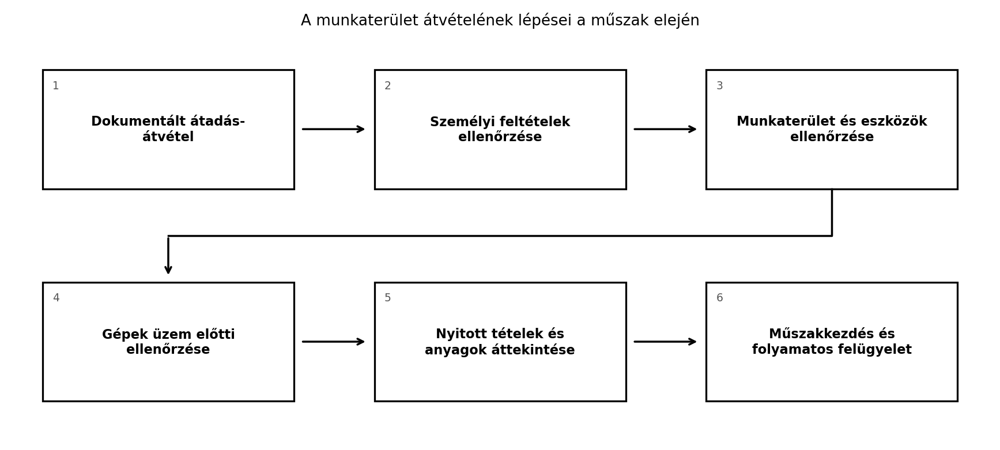

Hajnali fél négy van, a pékségben az éjszakai műszak éppen befejezi a kenyereket. Te a reggeli műszakot kezded. A dagasztógép tiszta, de az előző műszakban valaki egy sérült rozskovászt hagyott a hűtőben, és a kemence hőmérséklet-naplója hiányos. Ha ezt nem veszed észre az átvételkor, a következő hat órában rossz tésztát gyúrhatsz, romlott készletet vihetsz tovább, vagy éppen ellenőrizetlen gépet indítasz el. A munkaterület átvétele nem papírforma, hanem az egyetlen pillanat a műszakban, amikor még időben megfoghatod az előző műszak hibáit, és a saját felelősségedet is tisztázhatod. Ez az alfejezet azt tanítja meg, hogyan vegyél át egy sütőüzemet úgy, hogy a termékbiztonság, a gépbiztonság és a jogi felelősség ne csússzon át a következő órára.
A műszakváltás mindig egy rövid, de kritikus folyamat: dokumentált átadás, személyi feltételek ellenőrzése, tárgyi feltételek és gépek vizsgálata, nyitott tételek áttekintése, majd a műszak indítása. Az alábbi folyamatábra ezt mutatja:

A hat lépés közül az első öt az átvétel része; a hatodik már a folyamatos munkavégzés és felügyelet. A folyamat célja nem az, hogy kijelöljük a hibást, hanem hogy a műszak tiszta, dokumentált állapotból induljon. Ha bármelyik lépésnél eltérést találsz, azt a lépés befejezése előtt jelezni kell a műszakvezetőnek, és csak a megoldás után szabad továbbhaladni.
Definíció. Munkaterület átvétele az a műszak eleji, ellenőrzőlistán alapuló vizsgálat, amelynek során a belépő dolgozó vagy műszakvezető meggyőződik arról, hogy a munkaterület, a gépek, az eszközök, a nyersanyagok, a félkész- és késztermékek, valamint a dokumentáció megfelel a higiéniai, biztonsági és üzemszervezési előírásoknak.
Definíció. Műszakátadás az a folyamat, amelyben a távozó műszak írásban és szükség esetén szóban átadja a működéshez szükséges információkat a belépő műszaknak.
Definíció. Üzemi rendszabály a pékségben kötelező belső magatartási, higiéniai, biztonsági és technológiai szabályok összessége, amelyet a munkáltató írásban határoz meg, és amelyet a dolgozónak ismernie kell.
Definíció. Munkarend az üzemben érvényes munkaidő-beosztás, műszakkezdet és -vég, szünetek, valamint a helyettesítés rendje. A munkarendet a munka törvénykönyve és a belső kollektív szerződés vagy munkaszerződés szabályozza (ellenőrizendő: hatályos munka törvénykönyve szerinti munkarend-szabályok).
Szabály. A munkaterület átvételét mindig dokumentálni kell. A szóbeli „minden rendben” nem helyettesíti az átvételi naplót, mert vita vagy hiba esetén nem igazolható, ki mit vett át, és milyen állapotban volt a munkahely. A bejegyzésnek tartalmaznia kell: dátum, műszakazonosító, átvevő és átadó neve, ellenőrzött terület/gép, észlelt eltérés, döntés (pl. átvett / javításra kiadva), időpont, aláírás. Hőmérsékletmérésnél a mért értéket és mértékegységet is rögzíteni kell.
Szabály. Ha az átvételkor olyan eltérést találsz, amely termékbiztonsági vagy baleseti kockázatot jelent, a műszakot nem szabad megkezdeni, amíg a hibát el nem hárították vagy más, biztonságos megoldást ki nem jelöltek. Ez a szabály elsőbbséget élvez a gyártási ütemtervvel szemben.
Szabály. A tanuló munkaterületet csak a képzési felügyeletet ellátó személy irányításával vesz át, de az ellenőrzőlista kitöltésében aktívan részt kell vennie.
Higiénia. Az átvétel maga is élelmiszerbiztonsági művelet, ezért ugyanúgy érvényesek a személyi higiéniai alapok: tiszta munkaruha, hajháló, ékszer nélkül, fertőző betegség vagy gennyes seb esetén a dolgozó nem léphet az élelmiszer-előállító területre.
Az alábbi ellenőrzőlista a műszak eleji átvétel minimális magját mutatja. A számok nem technológiai lépések, hanem ellenőrzési pontok; mindegyiknél először megnézed, azután szükség esetén méred vagy kipróbálod, végül bejegyzed az átvételi naplóba.
Szabály. Ez a lista tanulási példa, nem helyettesíti az adott pékség átvételi utasítását. Minden sütőüzem a saját termékeire, gépeire és kockázataira alakítja ki a saját ellenőrzőlistáját, de a fenti nyolc pont minden környezetben megjelenik valamilyen formában.
A személyi feltételek ellenőrzése önmagadon kezdődik. A pék nem mehet be a termelőtérbe, ha hasmenése, hányása, láza vagy gennyes sebe van (lásd Személyi és üzemi higiénia). A munkaruha tiszta, a cipő csúszásmentes és zárt; a hajháló vagy sapka takarja a hajat; az ékszerek – karóra, gyűrű, karkötő, lógó fülbevaló – nincsenek rajtad. A kézmosás a műszakkezdés elején megtörtént. Ha sebet látsz magadon, kék, fémes ragtapasz legyen rajta, szükség esetén vízálló kesztyű.
A tárgyi feltételek az üzem fizikai állapotát és a munkához szükséges eszközök meglétét jelentik. A pék ellenőrzi a munkapadok, vágódeszkák, nyújtófák, kések, formák, szakajtók, sütőlemezek, rekeszek tisztaságát és épségét. A lefolyóban nincs pangó víz, a szemetesek zárva vannak, a takarítószerek elkülönítve, lezárva tárolódnak. A mérlegek hitelesek-e, azaz van-e rajtuk érvényes hitelesítési jel (ellenőrizendő: hitelesítés követelménye a mérésügyi előírások szerint), a hőmérők kijelzője olvasható-e. A világítás, a szellőzés és a menekülési útvonalak szabad állapota is a tárgyi feltételek része; ezeket nem csak kényelmi, hanem baleseti okból is ellenőrizni kell.
Példa. Egy kisüzemi pékségben a reggeli műszak átveszi a hűtőt. A hőmérő 7 °C-ot mutat, pedig az üzemi HACCP-terv 0–5 °C-ot ír elő a friss töltelékekre. Az átvevő ezt beírja a naplóba, az érintett tölteléket elkülöníti, „zárolt – nem felhasználható” címkével ellátja, és jelzi a műszakvezetőnek. A műszakvezető a HACCP-terv idő–hőmérséklet szabálya szerint dönt a felhasználásról; ismeretlen időtartamú hőmérséklet-eltérésnél a gyorsan romló töltelékeket (túró, tojás, tejszín, krém) selejtezik (ellenőrizendő: a pékség HACCP-terve). A döntést a naplóba írják. A gyártást csak azután kezdik, miután a hűtőt javításra kiadták. Ez a példa mutatja, hogy a tárgyi feltétel ellenőrzése nem bürokrácia, hanem a termékbiztonság egyik kapuja.
Gépbiztonság. A gépeket a pék csak a munkáltató által elrendelt módon, betanítás és felügyelet mellett kezelheti. Az üzemkezdés előtti gépelemzés nem az indítás próbája, hanem a veszélyforrások fizikai ellenőrzése. Az alaplistát a Munkaeszközök és gépek biztonsága alfejezetben már megismerte; itt a sütőipari környezetre alkalmazzuk:
Szabály. A gép üzem közbeni felügyelete nem passzív várakozás, hanem aktív figyelés. A pék a dagasztás, osztás, nyújtás vagy szeletelés közben hallgatja a gépet: rendellenes csikorgás, kopogás, egyenetlen járás, égett szag, vibráció vagy a védőburkolat melegedése azonnali beavatkozást igényel.
Szabály. Ha rendellenességet észlelsz, a gép leállítása az első lépés. A gépet a saját leállító gombjával állítsd le, majd ha a helyzet engedi, áramtalanítsd, és biztosítsd újraindítás ellen. A hibát csak a karbantartó vagy a műszakvezető javíthatja. Te futó gépbe soha ne nyúlj; a leállítás után is meg kell várni, amíg a forgó rész teljesen megáll.
Szabály. A gép tisztítása, kézi beavatkozás, tészta eltávolítása csak leállított, áramtalanított, újraindítás ellen biztosított gépen végezhető. A „gyors, mert mindjárt indul a következő tétel” gondolat a leggyakoribb gépbaleseti ok; ezt a gondolkodást a tanulóban meg kell szüntetni.
Higiénia. A gép üzem előtti szemléje nem csak biztonsági, hanem higiéniai ellenőrzés is. A dagasztóteknőben, az osztófejben, a nyújtóhengerek között nem maradhat tészta-, liszt- vagy idegenanyag-maradvány. A száraz liszt és morzsa kártevőt vonzhat; a nedves tésztamaradék pedig mikrobiológiai kockázat. A gép élelmiszerrel érintkező felületének tisztának és száraznak kell lennie, hacsak a technológia mást nem ír elő.
Definíció. Munkafegyelem a munkavállaló azon kötelezettsége, hogy a munkáltató jogszerű utasításait betartsa, a munkaidő alatt a munkakörét ellássa, és a munkavédelmi, tűzvédelmi, higiéniai szabályokat megtartsa. A munkafegyelem megsértése nem csak fegyelmi kérdés, hanem termékbiztonsági vagy baleseti kockázat is lehet.
Az üzemi rendszabályok legalább a következőket fedik le:
Figyelem. A pék nem villanyszerelő, és nem karbantartó. Sérült villamos vezetéket, dugaszt, gépet ne próbálj megjavítani; jelezd a műszakvezetőnek, és a gépet leállítva, megjelölve hagyd ott. A sérült eszköz használata tilos, még akkor is, ha a termelés késik.
Cél. A tanuló önállóan, felügyelet mellett elvégzi egy sütőüzem műszak eleji munkaterület-átvételét egy ellenőrzőlista alapján.
Eszközök és anyagok: átvételi napló vagy táblázat, toll, hőmérő, kézi lámpa, adott esetben zseblámpa, kesztyű, a pékség átvételi utasítása.
Higiénia. Műszakkezdés előtt végezd el a személyi higiéniai rutint: tiszta munkaruha, hajháló, ékszer nélkül, kézmosás, sebellátás. Ha fertőző tüneted van, ne lépj be a termelőtérbe.
Gépbiztonság. Gépet csak leállított állapotban vizsgálj. Az üzem előtti ellenőrzőlista tételeihez ne kapcsolj be semmit, csak ha a gépkönyv és a műszakvezető megengedi a próbát. A próba előtt győződj meg arról, hogy senki nem tartózkodik a mozgó részek közelében.
Számozott lépések:
Ellenőrzési pontok. A jó átvétel után a napló hiánytalan, a hőmérsékletek a határértéken belül vannak, a gépeken minden védőberendezés működik, a félkész- és késztermékek azonosítva vannak. A munkaterületen nincs idegen anyag, lezáratlan vegyszer vagy kártevőnyom.
Tipikus hibák. A leggyakoribb hiba, hogy a tanuló az átvételt „gyors aláírásnak” tekinti, és a gépek ellenőrzését kihagyja. Ezért a gyakorlatban mindaddig nem írhatja alá az átvételt, amíg a lista minden pontját nem látta. A másik hiba, hogy a tanuló a hűtő hőmérsékletét csak rápillantással ellenőrzi, nem olvassa le a kijelzőről. A gyakorló feladat során a képző mindig kérdezze meg a mért értéket.
Egy kis pékségben a délutáni műszak átvette a reggeli műszaktól a rozskovászt. Az átadó szóban azt mondta: „A kovász rendben van, csak kicsit savanyúbb lett.” Az átvételi naplóba ez került: „kovász átvéve”. Másnap a kenyér lapos, sűrű bélzetű lett, és savanyú ízű. A hibakeresésnél kiderült, hogy a savfok már az átadáskor a határ fölött volt, de ezt senki nem mérte és nem dokumentálta (ellenőrizendő: az üzemi savfok-határ). A tanulság: szóbeli megjegyzés nem helyettesíti a mért értéket és az írásos bejegyzést. Az átvételi naplónak mérhető, számszerű adatot kell tartalmaznia, különben a „kicsit savanyúbb” elveszik a műszakváltásban.
Egy másik esetben a dagasztógép vészleállító próbája az átvételkor sikertelen volt: a gomb benyomása után a gép tovább forgott. A tanuló ezt jelezte, és a műszakvezető leállíttatta a gépet, amíg a karbantartó meg nem javította. A gyártás egy órát csúszott, de nem történt baleset. A tanulság: a gépen talált eltérés nem a tanuló hibája, de ha elhallgatja, az már felelősségi kérdés.
A munkaterület átvételének „terméke” maga a dokumentált, tiszta, biztonságos műszakindítás. Ennek minőségi jellemzői:
Az átvétel minősége akkor megfelelő, ha egy ellenőrzés vagy egy későbbi hiba esetén a naplóból rekonstruálható, hogy a műszak milyen állapotból indult, és ki milyen döntést hozott.
Hiba: A dolgozó úgy veszi át a gépet, hogy a védőburkolatot nem nézi meg. Ok: rohanás, „úgyis jó volt tegnap”. Helyes gyakorlat: a burkolat meglétét és rögzítettségét minden műszak elején fizikailag ellenőrizni kell; a hiányzó vagy sérült burkolat leállítást von maga után.
Hiba: A hűtő hőmérsékletét a dolgozó nem olvassa le, csak ránéz, és „hidegnek” érzi. Ok: a tapintás vagy szemrevételezés nem mérés. Helyes gyakorlat: a beépített hőmérő vagy hitelesített kézi hőmérő kijelzőjét kell leolvasni, és a naplóba számmal beírni.
Hiba: A műszakátadáskor a távozó műszak nem adja át a folyamatban lévő tészták pontos azonosítóját, csak annyit mond: „a két kocsi a hűtőben van”. Ok: hiányos dokumentáció, időhiány. Helyes gyakorlat: a hűtőben lévő minden kocsihoz, tálcához címke tartozik, amelyen szerepel a termék neve, a gyártási idő, a tészta tömege, a felhasználhatóság. Az átvételkor ezeket egyeztetni kell.
Hiba: A tanuló észreveszi, hogy a padlón olajfolt van, de átsiklik fölötte, mert a következő műveletre koncentrál. Ok: a baleseti kockázatot nem ismeri fel. Helyes gyakorlat: az olajfolt csúszásveszély, ezért azonnal jelölni, feltakarítani vagy a területet lezárni kell.
Önellenőrzés – válaszok
1. feladat (A). Sorold fel a munkaterület-átvételi ellenőrzőlista nyolc pontjából legalább ötöt, és mindegyiknél írd le, mit vizsgálsz.
2. feladat (A). Fogalmazd meg saját szavaiddal a munkafegyelem fogalmát, és mondj két példát, amikor a munkafegyelem megsértése termékbiztonsági kockázatot jelent.
3. feladat (B). Készíts ellenőrzőlistát a dagasztógép üzemkezdés előtti átvételéhez. A lista legalább hat tételt tartalmazzon, és mindegyiknél jelezd, hogy a vizsgálat biztonsági vagy higiéniai szempontú-e.
4. feladat (B). Egy műszakátadás során az előző műszak azt mondja, hogy a hűtő hőmérséklete „rendben volt”, de a naplóba nem írták be. A hűtőben a mért hőmérséklet 8 °C, a belső előírás maximum 5 °C. Mit teszel lépésenként?
5. feladat (C). Az átvételkor a dagasztógép vészleállító próbája sikertelen: a gomb benyomásakor a gép tovább működik. Milyen veszélyt jelent ez, és mi a helyes intézkedési sorrend?
6. feladat (D). A munkaterület-átvételi naplóba az alábbi bejegyzés kerül: „A dagasztógép rendben, a hűtő hideg, a kenyerek a kocsin.” Mi a hiba ezzel a bejegyzéssel? Írd át megfelelő, ellenőrizhető formába.
1. feladat megoldása. A nyolc pont közül például: (1) személyi feltételek – munkaruha, hajháló, ékszerek, kézmosás; (2) munkaterület tisztasága – padló, falak, asztalok, lefolyók; (3) hűtők – hőmérséklet leolvasása és beírása; (4) nyersanyagok – lezárt csomagolás, jelölés, kártevőnyom; (5) félkész- és késztermékek – azonosító, tömeg, hőmérséklet, felhasználhatóság; (6) gépek – védőburkolat, reteszelés, vészleállító, vezetékek; (7) kézi eszközök – kések, formák, szakajtók tisztasága, épsége; (8) dokumentáció – CCP-lapok, hőmérséklet-napló, eltérésjelentések.
2. feladat megoldása. A munkafegyelem a munkáltató jogszerű utasításainak, a munkavédelmi, tűzvédelmi, higiéniai szabályoknak a betartása. Példák: (a) ha a dolgozó a dohányzási tilalmat megszegi a lisztes környezetben, tűz- és robbanásveszélyt okoz; (b) ha a dolgozó a kézmosást elmulasztja a tésztafeldolgozás előtt, kórokozókkal szennyezheti a terméket.
3. feladat megoldása. Például: (1) védőburkolat megléte és rögzítettsége – biztonsági; (2) reteszelés próbája – biztonsági; (3) vészleállító gomb működése – biztonsági; (4) dagasztóteknő tisztasága, nincs tészta- vagy lisztmaradvány – higiéniai; (5) hajtómű körül olajszivárgás mentes – biztonsági/higiéniai; (6) villamos csatlakozó, dugasz sértetlen – biztonsági; (7) kezelőszervek feliratozottak, épek – biztonsági; (8) a gépkönyv elérhető, a kezelő betanított – biztonsági.
4. feladat megoldása. (1) A mért 8 °C-ot beírom a naplóba, az időponttal együtt. (2) A hűtőben lévő termékeket elkülönítem, „zárolt – nem felhasználható” címkével ellenőrzött hűtőbe teszem. (3) Értesítem a műszakvezetőt, aki a HACCP-terv szerint dönt: mivel nem tudjuk, mióta 8 °C a hőmérséklet, a gyorsan romló töltelékeket (túró, tojás, tejszín, krém) selejtezzük, a kevésbé kockázatos anyagokról (pl. hűtött kelt tészta) a terv szerinti időhatár alapján dönt (ellenőrizendő: a pékség HACCP-terve); a döntést a naplóba írom. (4) A hűtőt javításra kiadom, vagy a hőmérséklet-beállítást ellenőriztetem. (5) A műszakot csak a hiba elhárítása után, a termékek sorsáról hozott döntés birtokában kezdem. (6) A bejegyzést és az intézkedést aláírom.
5. feladat megoldása. A vészleállító sikertelen próbája azt jelenti, hogy veszélyhelyzetben nem lehet a gépet azonnal leállítani, ezért a dolgozó nem tudja elkerülni a behúzást, zúzást. Helyes sorrend: (1) a gépet nem szabad indítani; (2) az eltérést a naplóba és a gépátadási lapra feljegyezni; (3) a műszakvezetőt és a karbantartót értesíteni; (4) a gépet leállítva, megjelölve hagyni; (5) a gyártási feladatot csak a javítás után, a próbával igazoltan lehet folytatni.
6. feladat megoldása. A bejegyzés nem ellenőrizhető, mert nem tartalmaz mért értéket, azonosítót és konkrét állapotot. Helyes forma: „Dagasztógép: védőburkolat, reteszelés, vészleállító próba megfelel; a dagasztóteknő tiszta. Hűtő H2: belső hőmérséklet 3 °C (határérték 0–5 °C); bejegyezve. Kenyérkocsi K-17: 12 db fehér kenyér, tésztaazonosító: 2025-02-26/É, maghőmérséklet 28 °C, felhasználható: 2025-02-27 06:00. Átvevő: XY, aláírás, időpont.” (Az adatok szemléltető példa jellegűek.)
A munkaterület átvétele dokumentált, ellenőrzőlistán alapuló műszakkezdő vizsgálat, amely a személyi és tárgyi feltételeket, a gépek üzem előtti biztonsági és higiéniai állapotát, a félkész- és késztermékeket, valamint az előző műszak dokumentációját ellenőrzi. Az átvétel eredménye akkor megfelelő, ha a naplóban minden ellenőrzött pontnál szerepel a mért érték és az aláírás. A gépek szemrevételezéses vizsgálata leállított, áramtalanított, újraindítás ellen biztosított állapotban történik; a reteszelés és a vészleállító működési próbáját a gépkönyv által előírt módon és gyakorisággal, a műszakvezető engedélyével, a veszélyes térből mindenkit kiküldve végezzük. Az üzemi rendszabályok a munkarendet, a munkafegyelmet, a higiéniai, munkavédelmi, tűzvédelmi és dokumentációs szabályokat foglalják magukba. Továbbvitt eredmény. Az átvételkor rögzített állapotadatok – folyamatban lévő tészták, hűtőtartalom, gépkihasználtság, szabad kemence- és munkaerő-kapacitás – bemenetként szolgálnak a Termelésszervezés, ütemidők és kapacitásszámítás alfejezetben. Aki hiányosan veszi át a műszakot, az nemcsak a saját munkáját, hanem a következő műszak kapacitásszámítását is hibás adatokkal terheli.